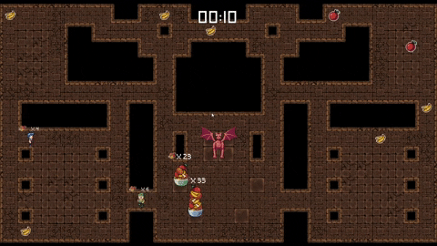

Feed the Beast
A FFA dungeon crawler

The Project
This was a school project which you had to make in teams. Our team existed of 3 developers and 2 artists. I had a fun time making this project. And have also learned quite a bit. The theme of the project was laying around 'make a local multiplayer game', which is a wide theme. So we gathered around the table and discusses what we wanted to make. After a bit of discussing we came to the conclusion that we wanted to make a FFA. In the game you need to gather as much food as you can and bring it to your bowl. When the timer is over, the person with the least amount of food would get eaten by the dragon, until one person is lasted.
What have I learnt?
Since we worked in a team, you needed to know what everyone was doing in order to not mess someones work up or do things that are not necessary. So we had strong communication and used Trello to see what the others were doing and how far they were with that. So, shortened, I have learned more about how important it is to have strong communication when working in a team project.
Languages & Information
- Languages: C#
- Software: Unity and Visual Studio
- Version control: GitHub
Screenshots and Videos
